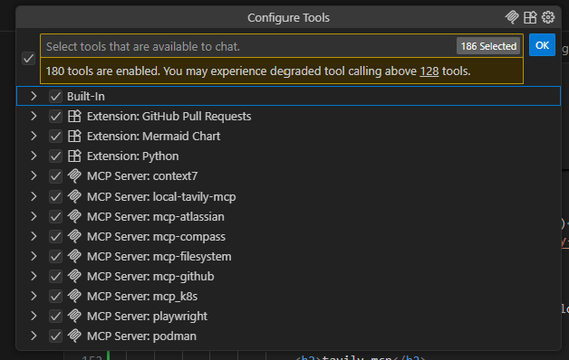
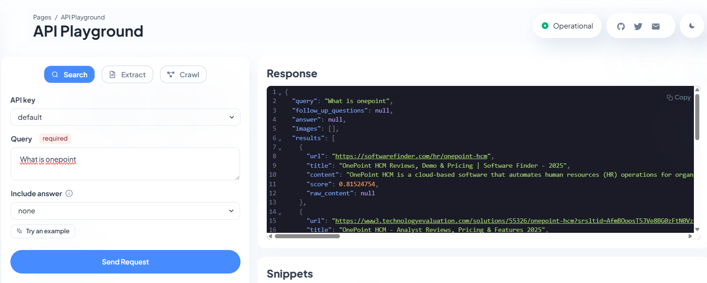
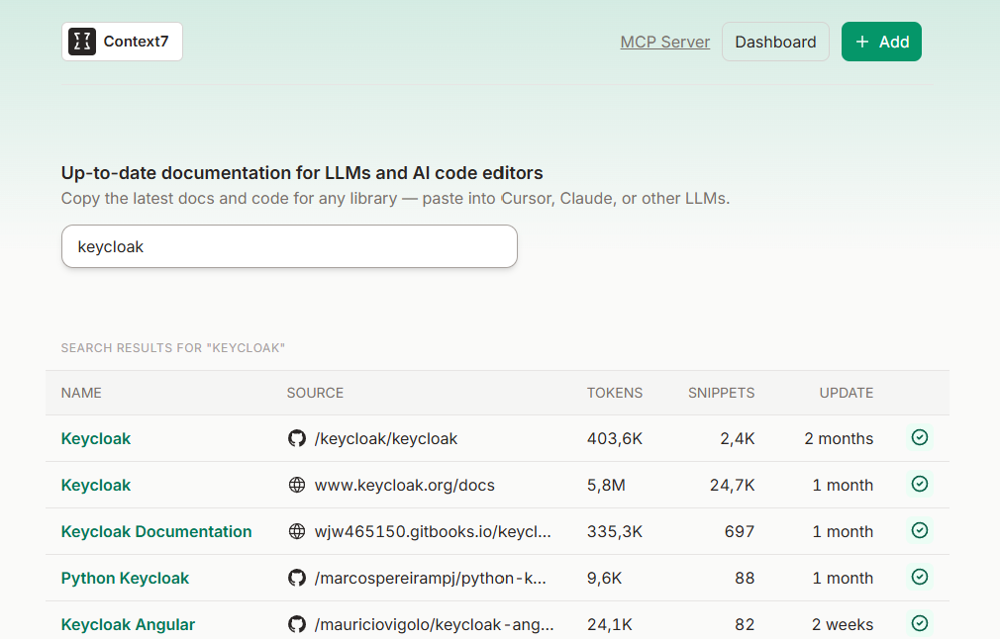
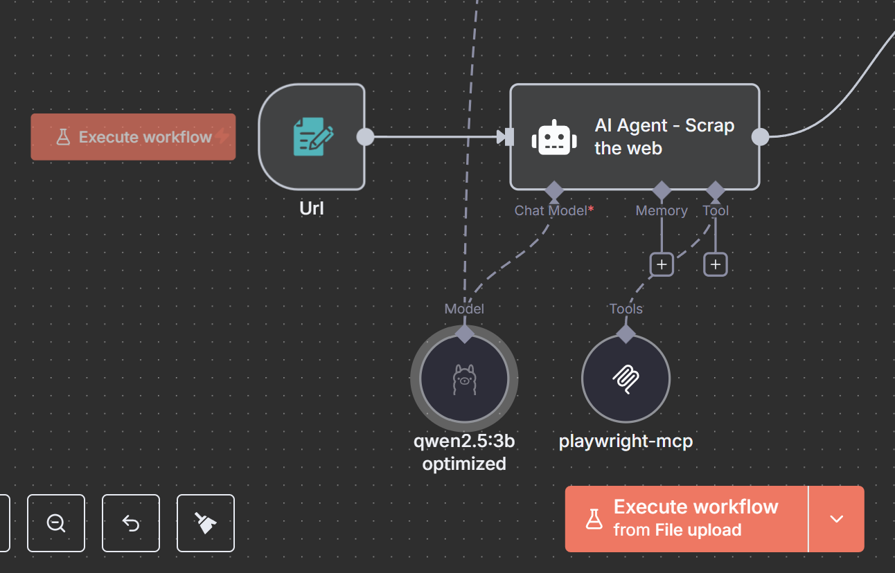

Model Context Protocol
Des LLM statiques aux agents IA dynamiques et intégrés
Antonin Brugnot • Onepoint
Et si vos IA pouvaient faire plus que parler ?
Le défi actuel des LLM
✅ Excellents pour :
- Générer du texte cohérent
- Résumer des documents
- Traduire entre langues
- Expliquer des concepts
Mais limités pour :
- 📊 Accéder à des données temps réel
- 🔧 Modifier des systèmes existants
- 🎯 S'adapter à un contexte spécifique
- ⚡ Exécuter des actions concrètes
Les tentatives précédentes
Petits anges partis trop tôt 🪦
Échecs du passé
-
Function Calling (OpenAI)
→ Propriétaire et limité à OpenAI -
LangChain
→ Over-engineering et complexité -
ChatGPT Plugins
→ Abandonné par OpenAI -
Solutions custom
→ Réinventer la roue à chaque fois
Model Context Protocol
La solution standardisée
Créé par Anthropic • Publié le 25 novembre 2024
Les promesses de MCP
- 🔌 Connecter les LLM à des outils externes
- 🔍 Explorer dynamiquement l'environnement
- ⚡ Exécuter des actions via des interfaces standardisées
- 🔄 S'adapter au contexte en temps réel
Fondations techniques
🔧 JsonRPC
🏗️ Architecture modulaire
SDK disponibles pour Node.js, Python, Java...
Architecture & Fonctionnement
Les 3 piliers de MCP
🔍 Découverte de contexte
Exploration dynamique des ressources disponibles
🛠️ Exécution d'outils
Interface standardisée pour les actions
🏗️ Architecture modulaire
Composants réutilisables et extensibles
Outils de développement
🧪 MCP Inspector
📦 SDK Multi-langages
- Node.js (référence)
- Python
- Java
- Et bien d'autres...
Cas d'usage concrets
~15 000 serveurs MCP disponibles
Domaines d'application
- 🧠 Développement assisté par IA
- ⚡ Automatisation des tâches
- 🔍 Analyse de données avancée
- 🎯 Support client intelligent
🧠 Développement avec IA
GitHub Copilot + MCP
Intégration native de MCP dans GitHub Copilot pour une assistance développement complète
mcp-github
- 🔄 Gestion des pull requests
- 📋 Création d'issues automatisée
- 🔍 Recherche dans le code
- 📊 Analyse des repositories
💡 Un équivalent existe pour GitLab
🔍 Recherche et données
tavily-mcp
Recherche internet intelligente pour remplacer le fetch basique
context7-mcp
Gestion du contexte documentaire à jour en temps réel
🏢 Outils d'entreprise
mcp-atlassian
- 📝 Confluence (SaaS ou On-Premise)
- 🎫 Jira (gestion de tickets)
- 🔍 Recherche unifiée
- 📊 Rapports automatisés
kubernetes-mcp-server
- ☸️ Gestion via kubeconfig
- 📦 Support Helm intégré
- 🔍 Inspection des pods
- 📊 Monitoring des ressources
🔄 Workflows intelligents
n8n + MCP
Workflows agentiques pour l'automatisation avancée
@mindpilot/mcp
- 🗺️ Exploration visuelle des sources
- 📊 Diagrammes automatiques
- 🔗 Partage de visualisations
- 🧭 Navigation intelligente
⚠️ Sécurité et vigilance
État actuel de MCP
- 📅 Protocole récent (novembre 2024)
- 🧪 Spécifications en évolution
- 🌱 Communauté en croissance rapide
- ⚠️ Implémentations encore expérimentales
→ Prudence recommandée en production
🎯 Vecteurs d'attaque principaux
| Type d'attaque | Description principale |
|---|---|
| Tool Poisoning | Injection de directives malveillantes dans la description du tool (y compris via Rug-Pull) |
| MPMA (DPMA & GAPMA) | Manipulation de la préférence de l’IA via nom/descriptions d’outil |
| Step-Controlled Reasoning | Interruption malveillante d'étape de raisonnement pour falsifier le résultat |
| Type d'attaque | Description principale |
|---|---|
| Trivial Trojans | Exfiltration via outils (“weather” mimétique) contrôlés par un trojan léger |
| Shadowing / Cross-tool | Discorde entre le comportement visible et caché, ou combinaison d’outils pour exfiltrer |
| Lethal trifecta | Trio accès de la donnée, instructions malveillantes mécanisme & d'exfiltration |

🛡️ Bonnes pratiques de sécurité
Principe du moindre privilège
# Mode lecture seule
./k8s-mcp-server --read-only
# Limitation des outils
ENABLED_TOOLS="confluence_search,jira_get_issue"
# Ou via CLI
docker run ... --enabled-tools "tool1,tool2" ...
Audit et surveillance
- 📊 Logs détaillés de toutes les actions
- 🔍 Monitoring en temps réel
- 🚨 Alertes sur activités suspectes
- 📈 Analyse des patterns d'usage
Validation et registries
🔍 Registry avec évaluation sécurité
mseep.ai - Évaluation automatisée des serveurs MCP
✅ Tests de sécurité
- Validation des permissions
- Scan des vulnérabilités
- Audit du code source
🚀 Démonstration
Voyons MCP en action !
🎯 Points clés à retenir
MCP transforme les LLM en agents
- 🔌 Connexion standardisée aux outils externes
- 🏗️ Architecture modulaire et extensible
- 🌍 Écosystème en croissance rapide
- ⚠️ Attention aux enjeux de sécurité
L'avenir de l'IA interactive
MCP ouvre la voie vers des agents IA véritablement intégrés à nos environnements de travail
🚀 Le futur, c'est maintenant !
Merci pour votre attention ! 🙏
Des questions ?
Contact & Bio